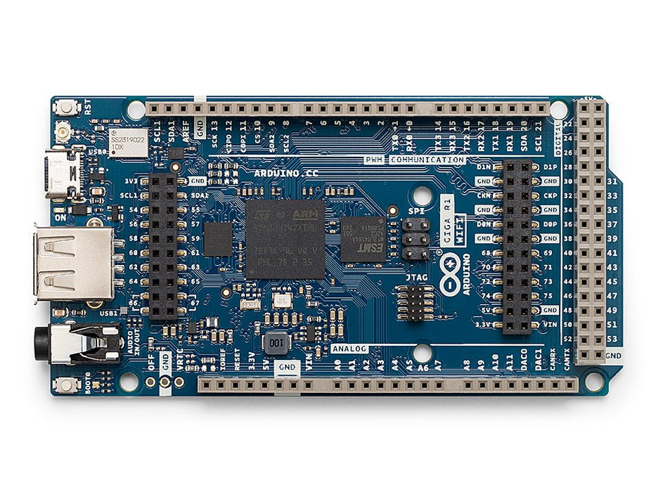
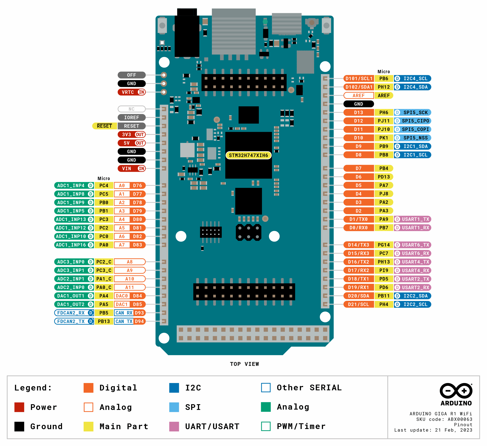

Arduino Giga R1 WiFi¶
Arduino Giga R1 WiFi는 101 × 53 mm Mega 폼팩터 보드로, STMicroelectronics STM32H747XI를 중심으로 제작되었습니다. 이 칩은 480 MHz의 Cortex‑M7과 240 MHz의 Cortex‑M4를 결합한 듀얼 코어 SoC입니다. OpenMV 펌웨어는 전적으로 M7 코어에서 실행됩니다. Giga는 표준 Arduino Mega 헤더 레이아웃에 더해 22핀 Arducam 카메라 플렉스 커넥터, Arduino Giga Display Shield용 MIPI‑DSI 커넥터, 그리고 3.5 mm 스테레오 오디오 잭을 추가합니다.
{kind=link}

전체 데이터시트, 사진 및 치수는 Arduino Giga R1 WiFi 제품 페이지 를 참고하십시오.
주요 특징¶
STMicroelectronics STM32H747XI 듀얼 Cortex‑M7 (480 MHz) + Cortex‑M4 (240 MHz). OpenMV 펌웨어는 M7 코어에서만 실행되며, M4 코어는 프로세서 간 통신을 위해 openamp 를 통해 노출됩니다.
8 MB 외부 SDRAM 및 2 MB 내부 플래시와 16 MB 외부 QSPI 플래시.
하드웨어 JPEG 인코더/디코더.
22핀 Arducam 호환 카메라 플렉스 커넥터 (
J6) — OV5640 (5MP), OV7670, GC2145, HM01B0, HM0360 센서 모듈에 대한 드라이버 지원.MIPI‑DSI 디스플레이 커넥터 (
J5)는 Arduino Giga Display Shield (480×800 정전식 터치 패널)용이며, 고급 캐리어를 위한 LTDC RGB 디스플레이 엔진도 함께 제공됩니다.스테레오 라인 출력과 마이크 입력을 갖춘 3.5 mm 오디오 잭.
Murata 1DX (CYW4343W) 모듈을 통한 Wi‑Fi b/g/n (2.4 GHz) + Bluetooth LE 5.1 — 온보드 U.FL 커넥터를 통해 제공된 안테나에 연결됩니다.
전원 / 시리얼 / 프로그래밍용 USB‑C (풀 스피드).
Mega 스타일 헤더의 사용자 I/O —
D0–D75(디지털),A0–A11(아날로그),DAC0/DAC1(DAC 출력),CAN_RX/CAN_TX(FDCAN2), 그리고 내부 행의SDA1/SCL1I²C 쌍. 보드 전면의 별도 6핀 SPI1 헤더에는CIPO/COPI/SCK(D89/D90/D91)가 분기되어 있습니다.고급 디버깅을 위해 상단 디버그 헤더에 분기된 JTAG / SWD.
핀 배치¶
{kind=link}

핀 레퍼런스¶
Arduino Mega 스타일 헤더는 76개의 디지털 핀 (D0–D75), 12개의 아날로그 핀 (A0–A11), 두 개의 DAC 출력 (DAC0/DAC1), 보조 I²C 쌍 (SDA1/SCL1), 그리고 FDCAN2 쌍 (CAN_RX/CAN_TX)을 노출합니다. 보드 전면의 별도 6핀 SPI1 헤더에는 CIPO/COPI/SCK (D89/D90/D91)가 분기되어 있습니다.
핀 이름 |
레퍼런스 |
기능 |
|---|---|---|
D0 |
3.3 V |
USART1 RX (Serial1) / TIM4 CH2 |
D1 |
3.3 V |
USART1 TX (Serial1) / TIM1 CH2 |
D2 |
3.3 V |
TIM2 CH4 / TIM5 CH4 / USART2 RX |
D3 |
3.3 V |
TIM2 CH3 / TIM5 CH3 / USART2 TX |
D4 |
3.3 V |
TIM8 CH1 / UART8 TX |
D5 |
3.3 V |
TIM3 CH2 / SPI1 MOSI / SPI6 MOSI |
D6 |
3.3 V |
TIM4 CH2 |
D7 |
3.3 V |
TIM3 CH1 / SPI1 MISO / SPI3 MISO / SPI6 MISO |
D8 |
3.3 V |
TIM4 CH3 / I2C1 SCL / I2C4 SCL / UART4 RX |
D9 |
3.3 V |
TIM4 CH4 / I2C1 SDA / I2C4 SDA / UART4 TX |
D10 |
3.3 V |
TIM1 CH1 / TIM8 CH3N |
D11 |
3.3 V |
TIM8 CH2 / SPI5 MOSI |
D12 |
3.3 V |
TIM8 CH2N / SPI5 MISO |
D13 |
3.3 V |
TIM12 CH1 / SPI5 SCK |
D14 |
3.3 V |
USART6 TX (Serial2) / SPI6 MOSI |
D15 |
3.3 V |
USART6 RX (Serial2) / TIM3 CH2 / TIM8 CH2 |
D16 |
3.3 V |
UART4 TX (Serial3) / TIM8 CH1N |
D17 |
3.3 V |
UART4 RX (Serial3) |
D18 |
3.3 V |
USART2 TX (Serial4) |
D19 |
3.3 V |
USART2 RX (Serial4) / SPI3 MOSI |
D20 |
3.3 V |
I2C2 SDA / TIM2 CH4 / USART3 RX |
D21 |
3.3 V |
I2C2 SCL |
D22 |
3.3 V |
GPIO |
D23 |
3.3 V |
GPIO / SPI6 SCK |
D24 |
3.3 V |
GPIO / SPI6 MISO |
D25 |
3.3 V |
GPIO |
D26 |
3.3 V |
GPIO |
D27 |
3.3 V |
GPIO |
D28 |
3.3 V |
GPIO |
D29 |
3.3 V |
GPIO |
D30 |
3.3 V |
GPIO |
D31 |
3.3 V |
GPIO |
D32 |
3.3 V |
GPIO |
D33 |
3.3 V |
GPIO |
D34 |
3.3 V |
GPIO |
D35 |
3.3 V |
GPIO |
D36 |
3.3 V |
GPIO |
D37 |
3.3 V |
TIM8 CH2 |
D38 |
3.3 V |
TIM8 CH2N |
D39 |
3.3 V |
GPIO |
D40 |
3.3 V |
TIM15 CH2 / SPI4 MOSI |
D41 |
3.3 V |
GPIO |
D42 |
3.3 V |
GPIO |
D43 |
3.3 V |
GPIO |
D44 |
3.3 V |
GPIO |
D45 |
3.3 V |
GPIO |
D46 |
3.3 V |
TIM8 CH3N |
D47 |
3.3 V |
SPI3 MOSI |
D48 |
3.3 V |
TIM8 CH3 / SPI5 SCK |
D49 |
3.3 V |
GPIO |
D50 |
3.3 V |
GPIO |
D51 |
3.3 V |
TIM15 CH1 / SPI4 MISO |
D52 |
3.3 V |
GPIO |
D53 |
3.3 V |
GPIO |
D54 |
3.3 V |
TIM8 CH1 (카메라 DCMI VSYNC) |
D55 |
3.3 V |
I2C3 SDA (카메라 DCMI HSYNC) |
D56 |
3.3 V |
TIM3 CH1 / TIM13 CH1 (카메라 DCMI PXCLK) |
D57 |
3.3 V |
TIM8 CH1N / UART8 RX (카메라 마스터 클럭 — TIM1 CH3) |
D58 |
3.3 V |
TIM8 CH3 (카메라 DCMI D7) |
D59 |
3.3 V |
TIM8 CH2 (카메라 DCMI D6) |
D60 |
3.3 V |
GPIO (카메라 DCMI D5) |
D61 |
3.3 V |
TIM8 CH2N / UART4 RX (카메라 DCMI D4) |
D62 |
3.3 V |
SPI1 SCK (카메라 DCMI D3) |
D63 |
3.3 V |
TIM5 CH2 / I2C4 SCL (디스플레이 I²C) |
D64 |
3.3 V |
TIM5 CH1 (카메라 DCMI D1) |
D65 |
3.3 V |
TIM12 CH2 (카메라 DCMI D0) |
D66 |
3.3 V |
GPIO (카메라 리셋 — 카메라 활성 시 점유됨) |
D67 |
3.3 V |
GPIO (카메라 파워다운 — 카메라 활성 시 점유됨) |
D68 |
3.3 V |
TIM3 CH1 / TIM8 CH1 / USART6 TX (Display Shield DSI RESET) |
D69 |
3.3 V |
TIM5 CH4 (Display Shield DSI TE) |
D70 |
3.3 V |
SPI2 SCK |
D71 |
3.3 V |
TIM8 CH4 / SPI2 MISO |
D72 |
3.3 V |
SPI2 MOSI |
D73 |
3.3 V |
ADC123 IN11 (Display Shield DFSDM 마이크 데이터) |
D74 |
3.3 V |
GPIO (디스플레이 백라이트 — Giga Display Shield가 점유) |
D75 |
3.3 V |
SPI2 SCK (Display Shield DFSDM 마이크 클럭) |
A0 / D76 |
3.3 V |
ADC12 IN4 |
A1 / D77 |
3.3 V |
ADC12 IN8 |
A2 / D78 |
3.3 V |
ADC12 IN9 / TIM3 CH3 / TIM8 CH2N |
A3 / D79 |
3.3 V |
ADC12 IN5 / TIM3 CH4 / TIM8 CH3N |
A4 / D80 |
3.3 V |
ADC12 IN13 / SPI2 MOSI |
A5 / D81 |
3.3 V |
ADC123 IN12 / SPI2 MISO |
A6 / D82 |
3.3 V |
ADC123 IN10 |
A7 / D83 |
3.3 V |
ADC1 IN16 / TIM2 CH1 / TIM5 CH1 (오디오 잭 마이크 입력) |
A8 |
3.3 V |
ADC3 IN0 (아날로그 전용) |
A9 |
3.3 V |
ADC3 IN1 (아날로그 전용) |
A10 |
3.3 V |
ADC12 IN1 (아날로그 전용) |
A11 |
3.3 V |
ADC12 IN0 (아날로그 전용) |
DAC0 / A12 / D84 |
3.3 V |
DAC1 OUT1 / ADC12 IN18 (오디오 잭 라인 출력 L) |
DAC1 / A13 / D85 |
3.3 V |
DAC1 OUT2 / TIM2 CH1 / SPI1 SCK / ADC12 IN19 (오디오 잭 라인 출력 R) |
D89 |
3.3 V |
SPI1 MISO (전면 SPI 헤더의 |
D90 |
3.3 V |
SPI1 MOSI (전면 SPI 헤더의 |
D91 |
3.3 V |
SPI1 SCK (전면 SPI 헤더의 |
CAN_RX / D93 |
3.3 V |
FDCAN2 RX / TIM3 CH2 / UART5 RX |
CAN_TX / D94 |
3.3 V |
FDCAN2 TX / SPI2 SCK / UART5 TX |
SDA1 / D102 |
3.3 V |
I2C4 SDA (디스플레이 터치 / 카메라 제어 버스) |
SCL1 / D101 |
3.3 V |
I2C4 SCL (디스플레이 터치 / 카메라 제어 버스) |
RESET |
3.3 V |
온보드 RESET 버튼을 누르거나 GND로 당겨 리셋 |
LED_RED |
3.3 V |
RGB LED 빨강 채널 (액티브 로우) |
LED_GREEN |
3.3 V |
RGB LED 초록 채널 (액티브 로우) |
LED_BLUE |
3.3 V |
RGB LED 파랑 채널 (액티브 로우) |
참고
A8–A11 은 STM32H747의 _C 핀에 있는 아날로그 전용 패드입니다 — GPIO 기능이 없으며 ADC를 통해서만 읽을 수 있습니다.
전원 핀¶
Mega 헤더 핀:
VIN — 6–32 V 입력. 온보드 벅 레귤레이터를 통해 보드에 전원을 공급합니다.
+5V — 다이오드를 통해 USB에서 공급되거나 온보드 벅 레귤레이터에서 공급되는 5 V 레일.
+3V3 — 메인 3.3 V 레일.
IOREF — 보드의 I/O 전압 (3.3 V)을 반영합니다.
AREF — ADC 핀용 아날로그 전압 레퍼런스. 기본값은 3.3 V이며, 다른 레퍼런스를 사용하려면 외부에서 구동하십시오.
OFF — GND로 당기면 +3.3 V 레일이 꺼지고 시스템이 종료됩니다.
VRTC — 3.0 V 코인 셀 입력 (최대 3.3 V)으로, 보드의 나머지 부분이 꺼진 동안에도 온칩 RTC를 계속 동작시킵니다.
GND — 공통 접지.
Giga R1은 다음 경로 중 어느 것으로든 전원을 공급받을 수 있습니다:
USB‑C — 온보드 벅 레귤레이터에 5 V를 공급합니다.
VIN 핀 — 안정화된 6–32 V 전원을 직접 인가합니다.
팁
배터리 수명 추정기 를 사용하면 주어진 활성 / 딥슬립 듀티 사이클에서 Giga R1이 배터리로 얼마나 오래 동작하는지 모델링할 수 있습니다.
복구 및 디버그 핀¶
RESET — 전원 헤더에 노출된 핀이자 보드 상단의 모멘터리 스위치로, SoC의 NRST 라인에 연결되어 있습니다. GND로 당기거나 버튼을 눌러 리셋합니다.
Giga R1은 Arduino의 부트로더에 진입하기 위해 Arduino 표준 더블 탭 리셋을 사용합니다. RESET 버튼을 빠르게 두 번 누르면 보드가 DFU 장치로 USB를 통해 다시 열거되며 OpenMV IDE가 새 펌웨어 이미지를 플래시할 수 있습니다.
부트로더가 완전히 없는 경우, BOOT0 버튼을 누른 채 RESET을 눌러 SoC를 ROM 부트로더 모드로 강제 진입시키십시오.
STM32 SWD 신호는 보드 전면의 10핀 1.27 mm Cortex 디버그 헤더에 노출됩니다. SEGGER J‑Link, ST‑Link 또는 표준 ARM JTAG/SWD 프로브를 통해 연결하십시오. 모든 디버그 신호는 3.3 V 기준입니다.
온보드 주변장치¶
LED¶
Giga R1에는 단일 사용자 RGB LED가 있으며, machine.LED 를 통해 소프트웨어로 제어할 수 있습니다:
from machine import LED
LED("LED_RED").on()
LED("LED_GREEN").on()
LED("LED_BLUE").on()
보드의 별도 전원 LED는 +3.3 V 레일이 켜져 있을 때마다 점등되며 사용자가 제어할 수 없습니다.
카메라 커넥터 (J6)¶
J6 는 22핀 Arducam 호환 카메라 플렉스 커넥터입니다. 지원되는 센서 모듈 중 아무거나 꽂으면 펌웨어가 csi — 카메라 센서 모듈을 통해 자동으로 감지합니다:
import csi
cam = csi.CSI()
cam.reset()
cam.pixformat(csi.RGB565)
cam.framesize(csi.QVGA)
cam.snapshot(time=2000) # let auto‑exposure settle
while True:
img = cam.snapshot()
지원되는 센서:
OV5640 — 5 MP 컬러, 최대 QSXGA (2592 × 1944).
OV7670 — 0.3 MP 컬러, 최대 VGA (640 × 480).
GC2145 — 2 MP 컬러, 최대 UXGA (1600 × 1200).
HM01B0 — 320 × 320 모노크롬.
HM0360 — VGA (640 × 480) 모노크롬.
경고
카메라가 초기화되어 있는 동안 다음 Mega 헤더 핀들은 펌웨어에 의해 점유되어 사용할 수 없습니다:
핀 |
이유 |
|---|---|
|
카메라 플렉스 커넥터의 DCMI 데이터 + 동기 신호 |
|
TIM1 CH3 — 카메라 마스터 클럭 |
|
카메라 리셋 GPIO |
|
카메라 파워다운 GPIO |
|
I²C 4 — 카메라와 공유됨; 버스는 사용 가능하지만 센서의 I²C 주소는 피하십시오 |
머신러닝¶
ml — 머신 러닝 은 CMSIS‑NN 커널을 사용하여 Cortex‑M7에서 양자화된 TFLite 모델을 실행합니다 — 초당 몇 프레임으로 소형 검출기를 돌리기에 충분히 빠릅니다. 읽기 전용 /rom 파일시스템의 모델은 RAM으로 복사하지 않고 플래시에서 직접 로드됩니다. 다음은 검출된 얼굴과 그 여섯 개의 랜드마크를 매 프레임마다 오버레이하는 128×128 BlazeFace 검출기입니다:
import csi
import time
import ml
from ml.postprocessing.mediapipe import BlazeFace
# Initialize the sensor.
csi0 = csi.CSI()
csi0.reset()
csi0.pixformat(csi.RGB565)
csi0.framesize(csi.VGA)
csi0.window((400, 400))
# Load built-in face detection model
model = ml.Model("/rom/blazeface_front_128.tflite", postprocess=BlazeFace(threshold=0.4))
print(model)
clock = time.clock()
while True:
clock.tick()
img = csi0.snapshot()
for r, score, keypoints in model.predict([img]):
ml.utils.draw_predictions(img, [r], ("face",), ((0, 0, 255),), format=None)
ml.utils.draw_keypoints(img, keypoints, color=(255, 0, 0))
print(clock.fps(), "fps")
M4 코어¶
Cortex‑M4 코어는 프로세서 간 통신을 위해 openamp 를 통해 노출됩니다. OpenMV 펌웨어는 M7에서만 실행되며, M4에는 자체 MicroPython 런타임이 없으므로 M4를 사용하려면 별도의 C 펌웨어 이미지를 빌드하여 openamp.RemoteProc 를 통해 파일시스템에서 로드해야 합니다. 가상 UART 엔드포인트를 구현하는 사전 빌드된 예제 펌웨어는 openamp_vuart 저장소에서 제공됩니다 — README에 따라 vuart.elf 를 빌드하십시오:
import openamp
import time
def ept_recv_callback(src_addr, data):
print("Received:", data.decode())
ept = openamp.Endpoint("vuart-channel", callback=ept_recv_callback)
rproc = openamp.RemoteProc("vuart.elf")
rproc.start()
count = 0
while True:
if ept.is_ready():
ept.send("Hello World %d!" % count, timeout=1000)
count += 1
time.sleep_ms(1000)
실제로 이 지원은 동작하는 듀얼 코어 플랫폼이라기보다는 openamp 인터페이스의 시연으로 보는 것이 가장 적절합니다 — M4는 M7과 독립적으로 리셋할 수 없으므로 M4를 중지하면 전체 시스템이 재부팅됩니다.
디스플레이 (J5)¶
J5 는 Arduino Giga Display Shield 용 MIPI‑DSI 커넥터입니다 — ST7701 패널 드라이버와 GT911 터치 컨트롤러를 중심으로 제작된 480 × 800 정전식 터치 패널입니다. 두 드라이버 모두 펌웨어에 프리징되어 함께 제공됩니다. 프레임버퍼를 출력하려면 display — 디스플레이 드라이버 를, 터치 입력에는 gt911.GT911 을 사용하십시오.
아래 예제는 카메라를 세로 방향 800 × 480 디스플레이 창에 미러링하고 각 터치 접점을 컬러 원으로 오버레이합니다:
import csi
import time
import image
import display
from gt911 import GT911
from machine import I2C
IMG_OFFSET = 80
touch_detected = False
points_colors = ((255, 0, 0), (0, 255, 0), (0, 0, 255),
(0, 255, 255), (255, 255, 0))
csi0 = csi.CSI()
csi0.reset()
csi0.pixformat(csi.RGB565)
csi0.framesize(csi.VGA)
lcd = display.DSIDisplay(
framesize=display.FWVGA,
portrait=True,
refresh=60,
controller=display.ST7701(),
)
# Pass pin names (not Pin objects) so the driver can flip
# the reset pin's direction during start-up.
touch = GT911(
I2C(4, freq=400_000),
reset_pin="D71",
irq_pin="D70",
touch_points=5,
refresh_rate=240,
reverse_x=True,
touch_callback=lambda pin: globals().update(touch_detected=True),
)
clock = time.clock()
while True:
clock.tick()
img = csi0.snapshot()
if touch_detected:
n, points = touch.read_points()
for i in range(n):
img.draw_circle(
(points[i][0] - IMG_OFFSET,
points[i][1],
points[i][2] * 3),
color=points_colors[points[i][3]],
thickness=2,
)
touch_detected = False
lcd.write(img, y=IMG_OFFSET, hint=image.TRANSPOSE | image.VFLIP)
print(clock.fps())
경고
Giga Display Shield는 카메라와 동일한 I²C 4 버스 (SDA1/SCL1)를 사용하며, LCD 백라이트 활성화에 D74 를, GT911 터치 IRQ 및 리셋에 D70/D71 을, DSI 패널의 TE 및 RESET 신호에 D68/D69 를 사용합니다.
마이크 (Display Shield)¶
Arduino Giga Display Shield에는 STM32H747의 DFSDM 주변장치에 연결된 디지털 마이크가 탑재되어 있습니다 (마이크 클럭은 D75, 마이크 데이터는 D73). 마이크는 audio — 오디오 모듈 를 통해 캡처됩니다. 각 버퍼는 부호 있는 16비트 PCM bytearray 로 도착하며, DSP를 위해 ulab/numpy 에 바로 넣을 수 있습니다:
import audio
from ulab import numpy as np
def loudness(pcmbuf):
samples = np.array(np.frombuffer(pcmbuf, dtype=np.int16), dtype=np.float)
rms = np.sqrt(np.mean(samples ** 2))
if rms > 10000:
print("Loud!", int(rms))
audio.init(channels=1, frequency=16000, gain_db=24)
audio.start_streaming(loudness)
while True:
pass
IMU (Display Shield)¶
Arduino Giga Display Shield에는 동일한 I²C 4 버스의 주소 0x68 에 Bosch BMI270 6축 IMU (3D 가속도계 + 3D 자이로스코프)가 탑재되어 있습니다. 이를 읽으려면 커뮤니티 micropython_bmi270 드라이버를 사용하십시오:
import time
from machine import I2C
from micropython_bmi270 import bmi270
sensor = bmi270.BMI270(I2C(4, freq=400_000))
sensor.load_config_file()
while True:
ax, ay, az = sensor.acceleration # m/s²
gx, gy, gz = sensor.gyro
print(ax, ay, az, gx, gy, gz)
time.sleep_ms(100)
전체 레지스터 맵은 BMI270 데이터시트 에 있습니다.
RGB LED (Display Shield)¶
Arduino Giga Display Shield에는 동일한 I²C 4 버스의 ISSI IS31FL3197 3채널 LED 드라이버로 구동되는 온보드 RGB LED가 탑재되어 있습니다. 드라이버의 AD 핀은 GND에 연결되어 있어 I²C 주소 0x50 에 위치합니다. LED를 제어하려면 커뮤니티 IS31FL3197 드라이버를 사용하십시오:
from machine import I2C
from is31fl3197 import IS31FL3197
led = IS31FL3197(I2C(4, freq=400_000))
led.set_color(255, 0, 0) # full red
전체 레지스터 맵은 IS31FL3197 데이터시트 에 있습니다.
Wi‑Fi¶
온보드 Murata 1DX (CYW4343W)는 network — 네트워크 구성 를 통해 스테이션 인터페이스로 노출됩니다. 무선 통신을 켜기 전에 제공된 안테나를 온보드 U.FL 커넥터에 연결하십시오:
import network, time
wlan = network.WLAN(network.STA_IF)
wlan.active(True)
wlan.connect("ssid", "password")
while not wlan.isconnected():
time.sleep(1)
print("Wi‑Fi IP:", wlan.ipconfig("addr4")[0])
Bluetooth¶
동일한 Murata 1DX는 Bluetooth LE 5.1도 노출합니다. asyncio 친화적인 BLE에는 aioble — 비동기 BLE 을 사용하십시오 — 예를 들어 주변장치로 광고하고 센트럴이 연결될 때까지 대기합니다:
import asyncio
import aioble
async def run():
while True:
conn = await aioble.advertise(250_000, name="Giga-R1")
print("Connected:", conn.device)
await conn.disconnected()
asyncio.run(run())
버스 레퍼런스¶
GPIO¶
실크스크린된 핀 중 아무거나 읽거나 구동하려면 machine.Pin 을 사용하십시오. 출력은 3.3 V CMOS이며 핀당 최대 20 mA를 싱크/소스할 수 있습니다 (전체 헤더에 걸쳐 합계 140 mA).
from machine import Pin
out = Pin("D2", Pin.OUT)
out.on()
out.off()
out.value(1)
inp = Pin("D3", Pin.IN, Pin.PULL_UP)
print(inp.value())
어떤 입력 핀이든 에지 전환 시 인터럽트를 발생시킬 수도 있습니다:
def handler(pin):
print("triggered:", pin)
Pin("D3", Pin.IN, Pin.PULL_UP).irq(
handler, Pin.IRQ_FALLING | Pin.IRQ_RISING,
)
UART¶
버스 |
TX |
RX |
Arduino 이름 |
|---|---|---|---|
UART1 |
D1 |
D0 |
Serial1 |
UART6 |
D14 |
D15 |
Serial2 |
UART4 |
D16 |
D17 |
Serial3 |
UART2 |
D18 |
D19 |
Serial4 |
from machine import UART
uart = UART(1, baudrate=115200)
uart.write("hello")
uart.read(5)
I²C¶
버스 |
SCL |
SDA |
|---|---|---|
I2C2 |
D21 |
D20 |
I2C1 |
D8 |
D9 |
I2C4 |
SCL1 |
SDA1 |
from machine import I2C
i2c = I2C(2, freq=400_000)
i2c.scan()
i2c.writeto(0x76, b"hi")
버스 2 (D20/D21, 실크스크린된 SCL/SDA)는 기본 Arduino Wire 버스입니다. 버스 4 (SCL1/SDA1)는 카메라 및 Giga Display Shield의 GT911 터치 컨트롤러와 공유됩니다 — 이 버스의 사용자 장치는 다음 주소 (7비트)를 피해야 합니다:
0x3C— OV5640 / GC21450x24— HM01B0 / HM03600x21— OV76700x5D— GT911 터치 컨트롤러 (Giga Display Shield)
동일한 하드웨어는 machine.I2CTarget 를 통해 타깃 (슬레이브) 모드로도 사용하여 다른 I²C 컨트롤러에 메모리 영역을 노출할 수 있습니다:
from machine import I2CTarget
buf = bytearray(32)
target = I2CTarget(2, addr=0x42, mem=buf)
SPI¶
버스 |
MOSI |
MISO |
SCK |
|---|---|---|---|
SPI1 |
D90 |
D89 |
D91 |
SPI5 |
D11 |
D12 |
D13 |
SPI1은 보드 전면의 전용 6핀 헤더에 노출됩니다. SPI5는 D11/D12/D13 의 실크스크린된 COPI/CIPO/SCK 레이블에 노출됩니다.
참고
전면 6핀 SPI1 헤더 (J7)의 핀 배치:
핀 |
신호 |
|---|---|
1 |
|
2 |
+5V |
3 |
|
4 |
|
5 |
NRST |
6 |
GND |
from machine import SPI
from machine import Pin
spi = SPI(5, baudrate=10_000_000)
cs = Pin("D10", Pin.OUT, value=1) # CS is not driven by the SPI peripheral
cs.value(0)
spi.write(b"hello")
cs.value(1)
CAN (FDCAN)¶
버스 |
TX |
RX |
|---|---|---|
FDCAN2 |
D94 |
D93 |
from machine import CAN
can = CAN(2, 500_000)
can.set_filters(None)
can.send(0x123, b"\xDE\xAD\xBE\xEF")
print(can.recv())
ADC¶
Giga R1은 A0–A11에 12개의 12비트 ADC 채널을 노출하며, 모두 3.3 V 기준입니다 — read_u16 은 핀에서 0–3.3 V 범위에 걸쳐 0–65535를 반환합니다. A8–A11 은 GPIO 주변장치가 없는 아날로그 전용 _C 패드입니다:
from machine import ADC
import time
adc = ADC("A0")
while True:
voltage = adc.read_u16() * 3.3 / 65535
print(voltage)
time.sleep_ms(100)
참고
A7 은 3.5 mm TRRS 오디오 잭의 마이크 입력에도 연결되어 있습니다 — 헤드셋을 꽂으면 ADC("A7") 이 아날로그 마이크 신호를 직접 읽습니다.
DAC¶
두 개의 12비트 DAC 채널이 pyb.DAC 를 통해 DAC0 와 DAC1 에 노출됩니다. 둘 다 3.5 mm TRRS 오디오 잭의 좌측 및 우측 라인 출력 채널로 연결되어 있습니다:
from pyb import DAC
left = DAC("DAC0")
right = DAC("DAC1")
left.write(int(0.5 * 255)) # 8‑bit, ~1.65 V
right.write(int(0.5 * 255))
PWM¶
핀 |
타이머 / 채널 |
|---|---|
D0 |
TIM4 CH2 / TIM17 CH1N |
D1 |
TIM1 CH2 |
D2 |
TIM2 CH4 / TIM5 CH4 / TIM15 CH2 |
D3 |
TIM2 CH3 / TIM5 CH3 / TIM15 CH1 |
D4 |
TIM1 CH3N / TIM8 CH1 |
D5 |
TIM1 CH1N / TIM3 CH2 / TIM8 CH1N / TIM14 CH1 |
D6 |
TIM4 CH2 |
D7 |
TIM3 CH1 |
D8 |
TIM4 CH3 / TIM16 CH1 |
D9 |
TIM4 CH4 / TIM17 CH1 |
D10 |
TIM1 CH1 / TIM8 CH3N |
D11 |
TIM1 CH2N / TIM8 CH2 |
D12 |
TIM1 CH2 / TIM8 CH2N |
D13 |
TIM12 CH1 |
D15 |
TIM3 CH2 / TIM8 CH2 |
D16 |
TIM8 CH1N |
D20 |
TIM2 CH4 |
D37 |
TIM8 CH2 |
D38 |
TIM8 CH2N |
D40 |
TIM15 CH2 |
D46 |
TIM8 CH3N |
D48 |
TIM1 CH1N / TIM8 CH3 |
D51 |
TIM15 CH1 |
D54 |
TIM8 CH1 |
D56 |
TIM3 CH1 / TIM13 CH1 |
D57 |
TIM1 CH3 / TIM8 CH1N |
D58 |
TIM8 CH3 |
D59 |
TIM8 CH2 |
D61 |
TIM8 CH2N |
D63 |
TIM5 CH2 |
D64 |
TIM5 CH1 |
D65 |
TIM12 CH2 |
D68 |
TIM3 CH1 / TIM8 CH1 |
D69 |
TIM5 CH4 |
D71 |
TIM8 CH4 |
D78 / A2 |
TIM1 CH2N / TIM3 CH3 / TIM8 CH2N |
D79 / A3 |
TIM1 CH3N / TIM3 CH4 / TIM8 CH3N |
D83 / A7 |
TIM2 CH1 / TIM5 CH1 |
D85 / A13 |
TIM2 CH1 / TIM8 CH1N |
이들 중 아무거나 machine.PWM 을 통해 구동하십시오:
from machine import Pin, PWM
pwm = PWM(Pin("D2"), freq=1_000, duty_u16=32768)
경고
TIM1 은 카메라가 csi — 카메라 센서 를 통해 초기화될 때 카메라 마스터 클럭용으로 예약됩니다. PWM 기능이 TIM1에만 있는 핀들 — D1, D10, D11, D12 — 은 카메라가 활성화되어 있는 동안 PWM으로 구동할 수 없습니다. 나열된 다른 핀들은 모두 TIM1이 아닌 대체 채널을 갖습니다.
참고
여러 핀이 타이머 채널을 공유합니다:
TIM2 CH4 는
D2와D20에 있습니다.TIM2 CH1 은
D83/A7와D85/A13에 있습니다.TIM3 CH1 은
D7,D56, 그리고D68에 있습니다.TIM3 CH2 는
D5와D15에 있습니다.TIM4 CH2 는
D0와D6에 있습니다.TIM5 CH1 은
D64와D83/A7에 있습니다.TIM5 CH4 는
D2와D69에 있습니다.TIM8 CH1 은
D4,D54, 그리고D68에 있습니다.TIM8 CH1N 은
D5,D16,D57, 그리고D85/A13에 있습니다.TIM8 CH2 는
D11,D15,D37, 그리고D59에 있습니다.TIM8 CH2N 은
D12,D38,D61, 그리고D78/A2에 있습니다.TIM8 CH3 은
D48와D58에 있습니다.TIM8 CH3N 은
D10,D46, 그리고D79/A3에 있습니다.TIM15 CH1 은
D3와D51에 있습니다.TIM15 CH2 는
D2와D40에 있습니다.
타이머 채널당 하나의 사용처만 선택하십시오.
소프트웨어 비트뱅잉 버스¶
machine.SoftI2C 와 machine.SoftSPI 는 추가 버스가 필요한 경우 어떤 GPIO에서도 동작합니다.
열 센서 (보드 외부)¶
펌웨어에는 외부에 연결된 열화상 카메라를 위한 fir — 열 센서 드라이버 (fir == far infrared, 원적외선) 드라이버가 포함되어 있습니다:
MLX90621 — 16 × 4 IR 어레이
MLX90640 — 32 × 24 IR 어레이
MLX90641 — 16 × 12 IR 어레이
AMG8833 — 8 × 8 IR 어레이
모듈을 보드의 I²C 버스에 연결하고 fir.init() + fir.snapshot() 으로 프레임을 읽으십시오:
import time
import image
import fir
fir.init() # auto‑detects the sensor
clock = time.clock()
while True:
clock.tick()
try:
img = fir.snapshot(x_scale=5, y_scale=5,
color_palette=image.PALETTE_IRONBOW,
hint=image.BICUBIC,
copy_to_fb=True)
except OSError:
continue
print(clock.fps())
fir 드라이버는 I²C 1 을 통해서만 센서와 통신합니다 — 모듈을 D8 (SCL)과 D9 (SDA)에 연결하십시오.
타이밍¶
time¶
time 모듈은 블로킹 지연, 단조 증가 틱, 경과 시간 측정을 다룹니다:
import time
time.sleep(1) # seconds
time.sleep_ms(500)
time.sleep_us(10)
start = time.ticks_ms()
# ...do work...
elapsed = time.ticks_diff(time.ticks_ms(), start)
가상 타이머¶
machine.Timer 는 하드웨어 타이머 슬롯을 소비하지 않고 주기적 또는 일회성 콜백을 예약합니다. 가상 (소프트웨어) 타이머를 사용하려면 id로 -1 을 전달하십시오:
from machine import Timer
one_shot = Timer(-1)
one_shot.init(period=5_000, mode=Timer.ONE_SHOT,
callback=lambda t: print("once"))
periodic = Timer(-1)
periodic.init(period=2_000, mode=Timer.PERIODIC,
callback=lambda t: print("tick"))
주기 값은 밀리초 단위입니다. 슬롯을 중지하고 해제하려면 deinit() 을 호출하십시오.
실시간 클럭¶
machine.RTC 는 리셋 전반에 걸쳐 — 그리고 코인 셀이 VRTC 핀에 연결되어 있으면 완전한 전원 차단 전반에 걸쳐서도 — 실제 시각을 유지합니다:
from machine import RTC
rtc = RTC()
rtc.datetime((2026, 4, 30, 4, 12, 0, 0, 0)) # Y, M, D, weekday, h, m, s, subsec
print(rtc.datetime())
워치독¶
machine.WDT 는 애플리케이션이 멈추면 보드를 리셋합니다. 일단 시작되면 중지하거나 재구성할 수 없으므로, 메인 루프 안에서 주기적으로 피드해야 합니다:
from machine import WDT
wdt = WDT(timeout=5_000) # 5 second window
while True:
# ...do work...
wdt.feed()
부팅 및 런타임 정보¶
펌웨어 업데이트 (DFU)¶
Giga R1은 Arduino의 부트로더에 진입하기 위해 Arduino 표준 더블 탭 리셋을 사용합니다. RESET 버튼을 빠르게 두 번 누르면 보드가 DFU 장치로 USB를 통해 다시 열거되며 OpenMV IDE가 새 펌웨어 이미지를 플래시할 수 있습니다. 부트로더가 완전히 없는 경우, BOOT0 버튼을 누른 채 RESET을 눌러 SoC를 ROM 부트로더 모드로 강제 진입시키십시오.
실행 중인 스크립트는 machine.bootloader() 를 호출하여 필요할 때 부트로더로 다시 진입할 수 있습니다:
import machine
machine.bootloader()
파일시스템 및 부팅 순서¶
Giga R1 펌웨어는 부팅 시 최대 두 개의 파일시스템을 마운트합니다:
내부 플래시 — 항상
/flash에 마운트됩니다. 기본적으로main.py와README.txt를 담고 있으며, 최초 부팅 시 생성됩니다.ROMFS — 읽기 전용의 메모리 매핑 파일시스템으로, 시작 시 MicroPython에 의해
/rom에 자동으로 마운트됩니다.
마운트 후 작업 디렉터리는 /flash 로 설정됩니다. 이후 인터프리터는 해당 디렉터리에서 스크립트를 실행합니다:
boot.py는 모든 소프트 리셋 (콜드 부팅, REPL에서의Ctrl‑D, 또는 실행 중인 스크립트가 반환될 때마다)에서 실행됩니다.main.py는boot.py직후 콜드 부팅 시에만 실행됩니다. 이후의 소프트 리셋은boot.py를 다시 실행하지만 곧바로 REPL로 떨어집니다 —main.py를 다시 실행하려면 보드를 완전히 리셋해야 합니다.
갓 플래시된 보드에 제공되는 기본 main.py 는 단지 사용자 RGB LED의 파랑 채널을 하트비트로 깜빡일 뿐이므로 (두 번의 짧은 펄스, 짧은 간격), 호스트가 연결되어 있지 않아도 펌웨어가 정상적으로 부팅되었는지 알 수 있습니다.
sys.path 는 두 파일시스템과 각각의 lib/ 하위 디렉터리를 포함하도록 확장되므로, import 가능한 모듈은 /flash/lib 또는 /rom/lib 에 둘 수 있습니다.
USB로 연결되면 /flash 는 호스트에서 USB 대용량 저장 장치 드라이브로도 열거되어 boot.py, main.py 및 기타 파일을 직접 편집할 수 있습니다. 호스트가 캐시된 쓰기를 플러시하도록 보드를 리셋하기 전에 드라이브를 꺼내십시오.
참고
OS는 드라이브를 수동 블록 장치로 취급하므로, 카메라에서 실행되는 코드가 생성하거나 수정한 파일은 호스트가 드라이브를 다시 마운트할 때까지 나타나지 않습니다. OS와 카메라가 동시에 동일한 파일시스템에 쓰면 OS가 우선하여 카메라가 가한 변경을 덮어씁니다.
참고
사용자 RGB LED의 빨강 채널은 호스트가 USB 대용량 저장 장치 드라이브에서 읽거나 쓰는 동안 잠깐 점등될 수 있습니다 — 이는 펌웨어가 구동하는 활동 표시기이며 결함이 아닙니다.
저장 용량¶
Giga R1은 다음과 함께 제공됩니다:
/flash— 11 MB FAT 파일시스템, 읽기/쓰기./rom— 4 MB 읽기 전용 메모리 매핑 ROMFS로, 제로 카피 mmap 접근의 이점을 누리는 스크립트와 ML 모델을 제공하는 데 사용됩니다.
하드 폴트 표시기¶
사용자 RGB LED가 모든 색상을 빠르게 순환하고 있다면 — 뚜렷한 색조라기보다는 반짝이는 흰색 LED처럼 보일 정도로 빠르다면 — 펌웨어가 복구 불가능한 하드 폴트에 도달한 것입니다. 복구하려면 펌웨어를 다시 플래시하십시오; 다시 플래시해도 도움이 되지 않으면 보드가 물리적으로 손상되었을 수 있습니다.
소프트웨어 라이브러리¶
Giga R1 빌드에만 고유한 모듈을 포함한 전체 모듈 목록은 라이브러리 색인 을 참고하십시오.